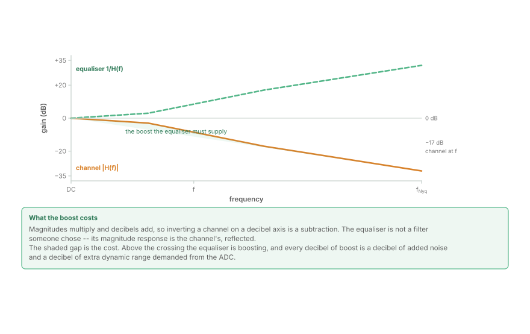
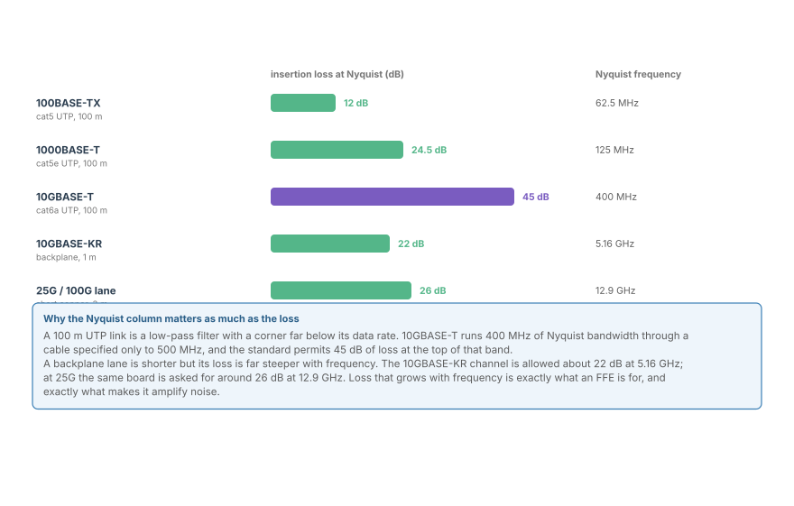
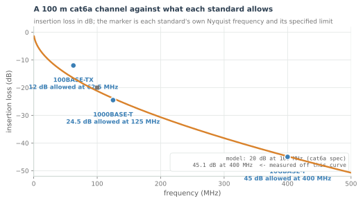
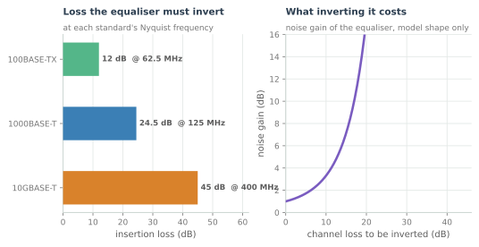
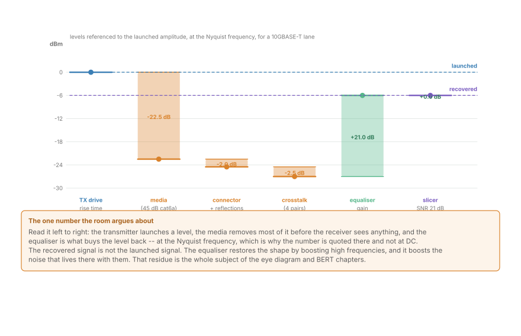

Gain, Loss and the Ethernet Link Budget
What gain means once the channel is a 100-metre cable: insertion loss in dB against frequency, the Nyquist frequency that decides what the equaliser must supply, and the margin arithmetic a link is signed off on.
In the optical parts of this course, "gain" means an amplifier, and the link budget is a column of decibels: launch power, span loss, amplifier gain, noise figure, OSNR. Ethernet has no amplifiers. A copper lane's entire budget is subtraction -- the transmitter launches a level, the channel removes most of it, and a digital filter buys some of it back. Understanding which part is which, and what the buying back costs, is the whole of this chapter.
The vocabulary is the one from Decibels and Dynamic Range, applied to a channel measured in frequency rather than a chain measured in stages. If decibel arithmetic is not yet automatic, that chapter is the prerequisite; here it becomes a design tool.
Two words that mean something specific
Insertion loss is what the channel does. It is the ratio of the power delivered to a matched load with the channel in place to the power delivered without it, quoted in decibels, and -- this is the part that matters -- it is a function of frequency. A cable is a low-pass filter with a corner far below its data rate, so its loss is small at DC and enormous at the top of the band the link uses.
Gain is what the receiver does about it. An equaliser is a filter whose magnitude response is roughly the inverse of the channel's over the band that matters. In decibels, the arithmetic is a subtraction, which is why the two words belong in one chapter.

Three consequences fall straight out of that picture, and all three are counter-intuitive the first time:
- The equaliser is not chosen, it is determined. Once you know the channel and the band, its magnitude response is fixed. What an engineer chooses is the structure -- how many taps, what spacing, what adaptation -- not the target.
- Every decibel of boost is a decibel of added noise. A passive channel attenuates signal and noise together; the equaliser amplifies both. The signal-to-noise ratio at the slicer is therefore worse than at the receiver's input, and it is worse by roughly the amount of loss that was inverted above the noise corner.
- The boost is only needed where the signal is. Loss at 400 MHz matters because the signal has energy there. That is what the Nyquist frequency decides.
The Nyquist frequency decides the problem
A link at R baud has useful signal content up to about R/2, and that is the highest frequency the transmitter is required to produce and the channel is required to pass. Everything above it is filtered away, and the loss at R/2 is the single number the equaliser has to centre its response on.
That is why Ethernet loss is always quoted at a frequency and never on its own. A figure without a frequency attached is not a specification.
| Standard | Nyquist frequency | Allowed insertion loss there |
|---|---|---|
| 100BASE-TX | 62.5 MHz | ~12 dB |
| 1000BASE-T | 125 MHz | ~24.5 dB |
| 10GBASE-T | 400 MHz | ~45 dB |
| 10GBASE-KR | 5.16 GHz | ~22 dB |
| 25G per lane | 12.9 GHz | ~26 dB |
The pattern is worth staring at. Twisted-pair Ethernet trades frequency for loss: it stays under 500 MHz and pays in decibels, because a cable's loss grows with frequency and 100 m of it is a great deal of cable. Backplane lanes go the other way -- a metre of PCB has less absolute loss at low frequency, but its loss rises far more steeply, so the same 22 to 26 dB is spent over 5 to 13 GHz instead of over 125 to 400 MHz.

The bars are the loss each lane must equalise, and the right-hand column is the reason they are not comparable to each other. Forty-five decibels spread over 400 MHz is a very different problem from twenty-two decibels spread over 5.16 GHz, even though the first number is larger: what the receiver has to do is follow the slope of the loss, and the slope is set by the ratio of the band to the corner frequency.
The channel, as a curve

The figure computes the shape a twisted pair actually has: loss proportional to the square root of frequency, because current crowds toward the conductor's surface as frequency rises, plus a small linear term for the dielectric. It is normalised to 20 dB at 100 MHz, which is what cat6a is specified to, and the other numbers are then read off the curve rather than assumed.
Two things to notice:
- The 10GBASE-T marker sits almost exactly on the curve. The standard's 45 dB at 400 MHz was not chosen for convenience; it is what a compliant cable delivers, which means a compliant link has approximately no margin at the top of its band by design. The margin is created later, in the receiver.
- The curve is not a straight line on a linear axis. Loss grows faster at first and then more slowly, because the square-root term saturates. On a log-frequency axis it approaches a straight line of slope 1/2 -- the signature of the skin effect, and the reason a cable's bandwidth is quoted as a frequency rather than a loss.

The left panel of that figure is the same table as a picture. The right panel is the part that decides whether a link works: as the loss to be inverted grows, the noise gain grows with it. The curve is a model rather than a measurement -- the annotation says so -- but its shape is the honest one. An equaliser that inverts more channel must amplify more noise, and there is a point beyond which spending more taps makes the link worse rather than better.
Work the budget once
Take a 10GBASE-T lane and add it up. Every one of these numbers is a decibel and every one of them is a subtraction.

- Launch: the driver delivers a defined differential amplitude.
- Media: 45 dB at 400 MHz, per the mask.
- Connectors and reflections: a few decibels more, frequency-dependent, and specified separately as return loss.
- Crosstalk: the three neighbouring pairs transmit at the same time; alien and near-end crosstalk add a noise term rather than a loss term, but they land in the same budget.
- Equaliser gain: buys the level back at Nyquist -- at the price of the noise gain on the right-hand panel.
- At the slicer: whatever signal-to-noise ratio survives, which is the number that gets compared against the FEC's requirement.
The shape of that budget is worth remembering because optical link budgets have the same shape with different labels: a launched quantity, a series of frequency-dependent losses, one or two gains, and a required signal-to-noise ratio at the decision point. What changes between copper and fibre is which terms dominate.
Gain in the receiver, before the equaliser
There is a second gain in a real link, and it is analogue: the AGC in front of the ADC. Its job is to place the received signal inside the converter's full scale, and it is the same problem as in Quantization, SNR and ENOB and Decibels and Dynamic Range -- a ceiling set by clipping, a floor set by quantisation, and a signal that must sit between them.
Three facts connect the equaliser to the converter, and they are the reason the two are designed together:
- The equaliser's boost happens after the ADC. Dynamic range given away to a poorly placed AGC cannot be recovered by any filter, because the information is gone.
- A peaky equaliser raises the peak-to-average ratio. The AGC must back off to avoid clipping those peaks, which costs signal-to-noise ratio everywhere else.
- More equaliser taps mean more arithmetic, and the arithmetic has a word length. Fixed-point equalisation is a design in its own right, and fixed-point arithmetic and Q-formats are where that is worked out.
This is why the practical question is never "how much gain?" but "how much gain, in what bandwidth, at what resolution, and what does it cost in noise?" The next chapter is the picture that answers it in one glance.
Where this connects
- The gain the equaliser supplies is the mirror of the channel loss at Nyquist, computed rather than chosen.
- Loss rises with frequency; that is why baud rate has a ceiling, and why PAM4 plus more lanes beat one faster lane.
- Every decibel of inverted loss above the noise corner costs a decibel of signal-to-noise ratio. That cost is the subject of the next chapter, on reading an eye diagram.
- The signal-to-noise ratio that survives the budget is what the BERT chapter converts into an error ratio.
- The channel curve itself is measured in the frequency domain, and the DFT chapter is how that measurement is made.
In the optical link
The optical span budget is the same arithmetic with a different dominant term. Launch power, span loss (0.2 dB/km at 1550 nm, so 20 dB per 100 km), amplifier gain, and an OSNR requirement at the receiver. Frequency dependence is nearly absent at the operating wavelength and becomes a dispersion problem instead -- the loss is flat, and the phase is not.
Amplifiers change the sign of the noise calculus. An EDFA supplies gain without inverting a loss, so a 20 dB span loss followed by 20 dB of amplifier gain costs only the amplifier's noise figure, not 20 dB of noise gain. That single difference is why optical links cross oceans and copper links stop at 100 metres.
What transfers is the discipline. In both cases: the signal-to-noise ratio at the decision point is the currency, every element on the path is a term in decibels, and the receiver's own noise is always referred to its input before the budget is added up. Chromatic Dispersion and the Frequency-Domain Equaliser is this chapter's mirror image in fibre, where the equaliser inverts a phase curve instead of a magnitude one.
And the ceiling is the same shape. The equaliser can only invert what the receiver still has dynamic range to represent. In a coherent receiver that limit is the ADC's ENOB; in a copper lane it is the same ENOB at a lower baud rate. The number is different, the failure mode is identical: a boost that lifts the noise floor past the signal.